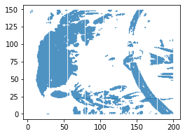
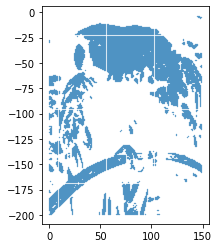
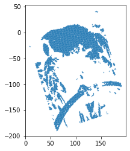

from PIL import Image
import requests
from io import BytesIO
url = "https://upload.wikimedia.org/wikipedia/commons/f/fa/Grayscale_8bits_palette_sample_image.png"
from urllib.request import urlopen
from PIL import Image
img = Image.open(urlopen(url))
imgRotations were a major stumbling block for me in my undergrad applied linear algebra class. I’d taken a 300-level math major linear algebra course, and I figured a 400 level applied linear algebra course would be an easy follow-on to fulfill the upper division requirement for the math minor.
It was not. It was very hard. It included computational work and some fairly advanced applications. At the time, I did not know how to code so everything was pretty hopelessly abstract
Now, armed with 6 years of Python experience, I am working my way through Coding the Matrix, which I recommend very highly. It has helped me gain clarity on some of these challenging concepts. There’s also a philosophical angle to it - throughout Dr. Klein articulates the advantages of mathematical learning through coding (emphasis mine):
Moreover, a linear-algebra instructor whose pupils are students of computer science has a special advantage: her students are computationally sophisticated. They have a learning modality that most students don’t—they can learn through reading, writing, debugging, and using computer programs. For example, there are several ways of writing a program for matrix-vector or matrix-matrix multiplication, each providing its own kernel of insight into the meaning of the operation—and the experience of writing such programs is more effective in conveying this meaning and cementing the relationships between the operations than spending the equivalent time carrying out hand calculations. Computational sophistication also helps students in the more abstract, mathematical aspects of linear algebra. Acquaintance with object-oriented programming helps a student grasp the notion of a field—a set of values together with operations on them. Acquaintance with subtyping prepares a student to understand that some vector spaces are inner product spaces. Familiarity with loops or recursion helps a student understand procedural proofs, e.g. of the existence of a basis or an orthogonal basis. Computational thinking is the term suggested by Jeannette Wing, former head of the National Science Foundation’s directorate on Computer and Information Science and Engineering, to refer to the skills and concepts that a student of computer science can bring to bear. For this book, computational thinking is the road to mastering elementary linear algebra.
I am convinced that students of mathematics would be better served by a “computational thinking” approach to learning math - less memorization and plug-and-chug, pencil-and-paper scribbling and more reading and writing code - I know I certainly am!
The first time I covered this material I struggled very badly in many places. I couldn’t grasp the connection between rotations, the complex plane, and roots of unity. That’s simple enough in retrospect, but the material was overwhelming and the connection was totally lost on me at the time. In the defense of the instructors we were running behind, en route to the discrete Fourier transform and we didn’t really have time to stop for straggler.
Now, with free time, a textbook, and some Python, I am free to build intuition and see these rotations for myself.
Parrots the right way up, all the way down
This is the best greyscale image I could find on short order (and it definitely helps to have a greyscale image because we are about to binarize it!) It’s also convenient that it is an image with one and only one “correct” orientation - a right way up!
import numpy as np
img_array_ = np.asarray(img)
# binarize!
img_array_bin_ = img_array_ > 128import matplotlib.pyplot as plt
# Unpacking the "white" points and scatterplotting
plt.scatter(*img_array_bin_.nonzero(), s=0.1)
plt.gcf().set_size_inches((4, 3)) 
Converting the image to a numpy array did not go seamlessly. This is not the correct orientation.
Converting to complex coordinates is the first step towards rotating:
x,y = img_array_bin_.nonzero()
coords_complex_ = x + y*1jOur rotate method will return the rotated points
rotate_ = lambda x, theta: x*np.exp(1j * theta)The rotation angle should be 180 degrees + 90 degrees to flip and then make vertical. This works out to \(\frac{3\pi}{2}\) radians:
cc = rotate_(coords_complex_, 3*np.pi/2)
plt.scatter(cc.real, cc.imag, s=0.1)
plt.gcf().set_size_inches((3, 4)) 
Changing the angle gets us a slightly different orientation:
cc = rotate_(coords_complex_, 8*np.pi/5)
plt.scatter(cc.real, cc.imag, s=0.1)
plt.gcf().set_size_inches((3, 4)) 
It’s a trivial application but it helped me understand the concepts at work here.
As Dr. Klein said:
they can learn through reading, writing, debugging, and using computer programs.
Yes we can!